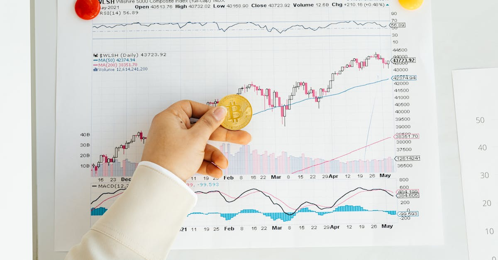
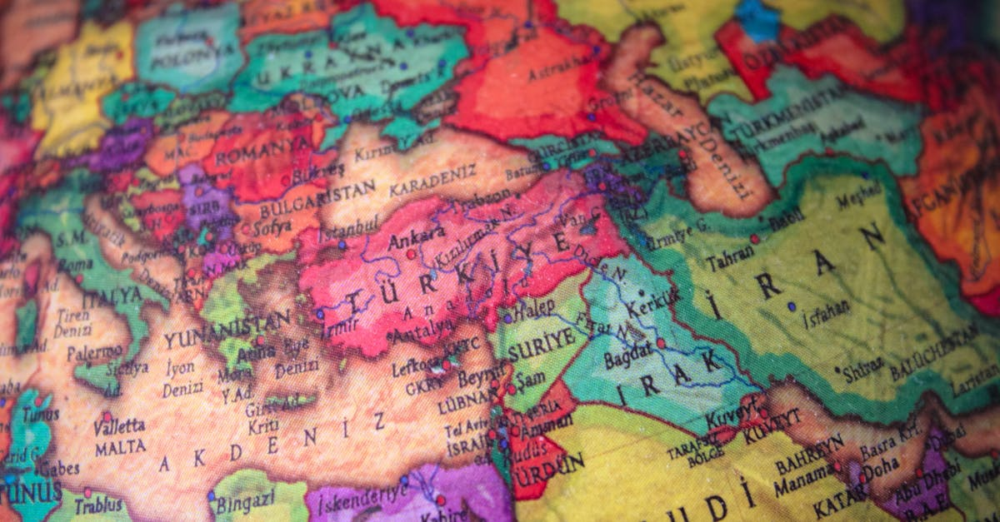
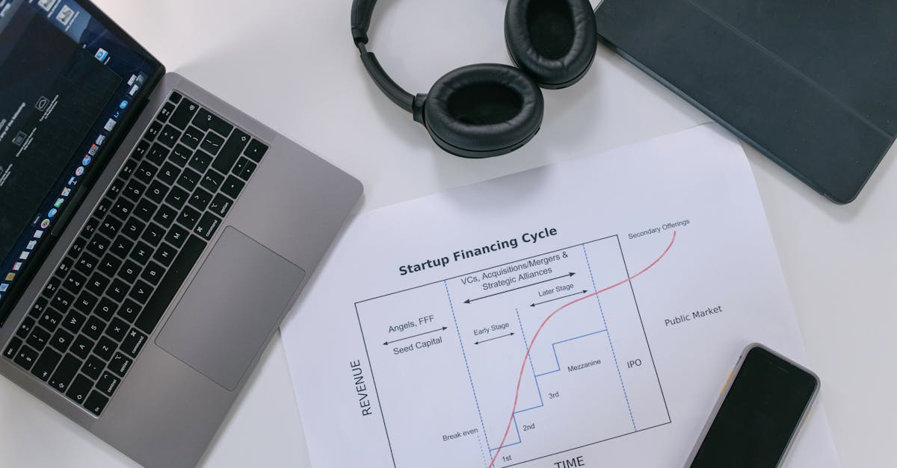
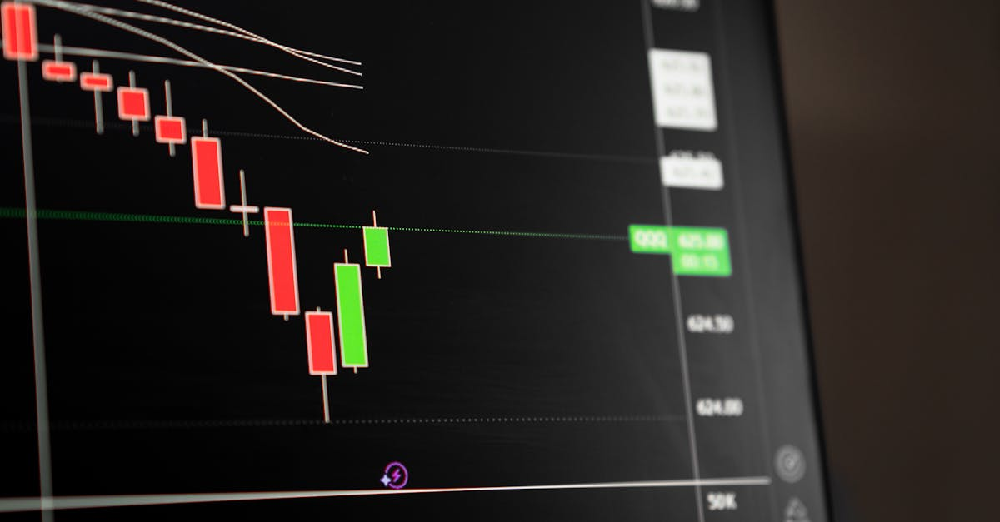
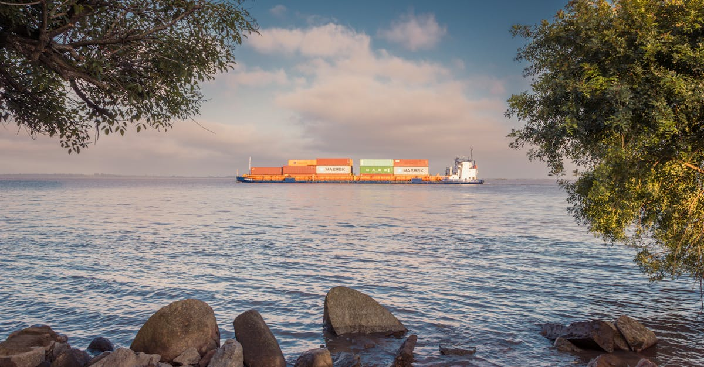
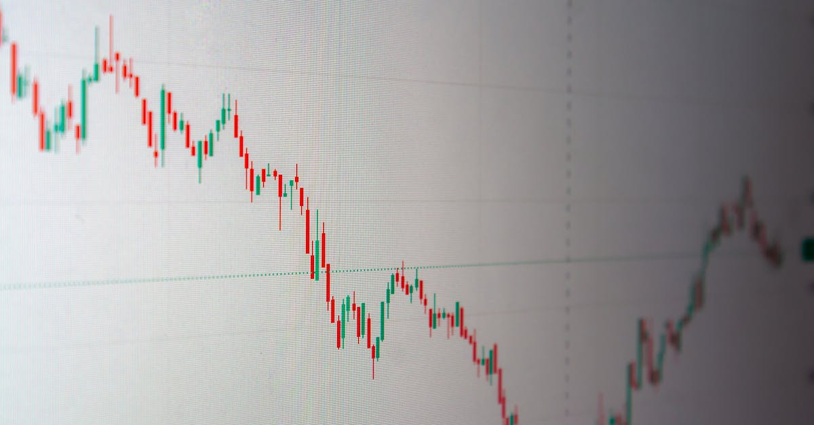
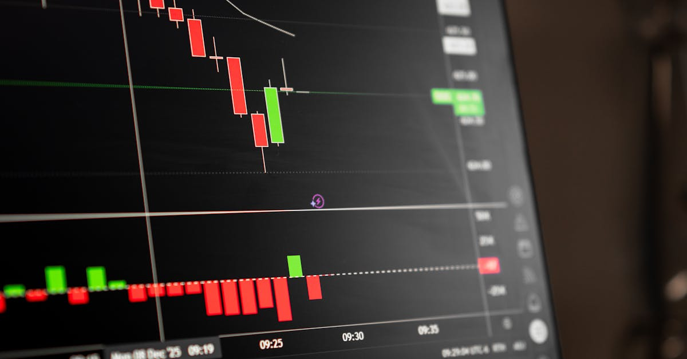
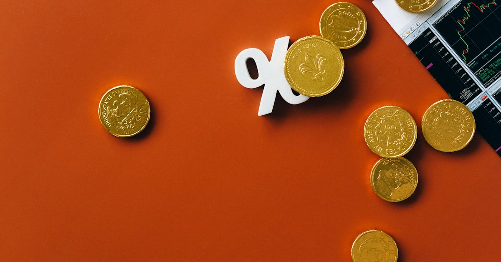
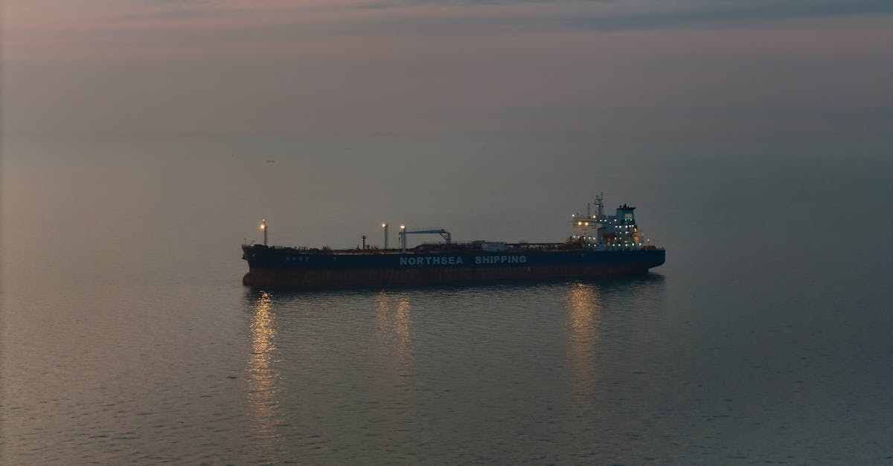
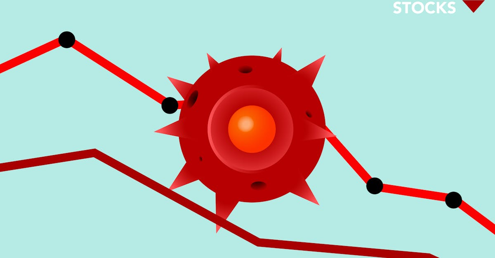

Japon : Stabilité FX, clé pour attirer les capitaux mondiaux
Le PDG de JPX souligne l'importance d'un taux de change stable pour attirer les investissements étrangers. Analyse pour GoldTrade AI.

Or : Stabilité Post-Fed, Entre Risques d'Inflation et Géopolitique
L'or se stabilise après la décision de la Fed. Analyse des risques d'inflation, de la géopolitique et de l'impact sur votre trading.

Trump vs Merz : L'Iran, la Géopolitique et l'Impact sur l'Or
Analyse de la confrontation Trump-Merz sur l'Iran et ses répercussions sur les marchés de l'or et des métaux précieux. Stratégies IA pour le trading.

EQT relance Intertek : Quelle stratégie derrière l'offre améliorée ?
EQT prépare une nouvelle offre pour Intertek après deux refus. Analyse des implications pour le marché et le secteur des métaux précieux.

CATL: L'IA et les Métaux Précieux au Cœur des Investissements Géants
Millennium et Norges Bank investissent 5 milliards dans CATL. Quel impact sur les marchés des métaux et l'IA dans le trading ?
Guerre, Pénurie de Puces : Le Prochain Chaos Financier ?
Les chaînes d'approvisionnement en puces électroniques menacent de s'effondrer sous le poids des conflits. Quelles conséquences pour les marchés et l'investissement ?
Les Émirats bousculent l'OPEP: Quel impact sur l'or et votre portefeuille?
Le départ choc des Émirats Arabes Unis de l'OPEP redéfinit le marché pétrolier. Analyse des conséquences sur l'or, les métaux précieux et l'IA.

Marché de la Défense : L'euphorie s'estompe, l'or reprend son souffle
Les actions de défense américaines sous pression face aux craintes budgétaires. Une opportunité pour l'or et les métaux précieux avec GoldTrade AI.
Data Centers : La Ruée vers l'Or Numérique Crée une Pénurie
Les data centers peinent à trouver des lieux. Cette crise d'espace impacte les métaux précieux et le trading par IA.
Crédit Bancaire UE Serré : Opportunités pour l'Or en 2026
Les banques de la zone euro durcissent le crédit aux entreprises. Analyse des implications pour l'or et les métaux précieux en 2026.

1999 Revisitée ? Comment l'IA Redéfinit le Trading de l'Or
Les marchés rappellent 1999. Découvrez comment l'IA et les métaux précieux peuvent protéger et optimiser vos investissements face à la volatilité.

Pétrole à 90$ : Hormuz, l'Or et l'IA, anticiper la tempête
Goldman Sachs revoit ses prévisions pétrole à la hausse. Découvrez l'impact des tensions à Hormuz sur l'or et comment l'IA révolutionne le trading.

Marchés de prédiction bloqués au Brésil : Quel impact pour l'or et l'IA ?
Le Brésil bloque des plateformes de prédiction. Analyse des conséquences pour les marchés financiers, l'investissement et le trading d'or par IA.

Walmart : l'empire lance ses obligations, quels impacts ?
Walmart s'apprête à émettre des obligations pour financer sa croissance. Analyse des implications pour les investisseurs et les marchés.

IA et Or: Naviguer les Marchés de 2026
Analyse des marchés financiers du 27 avril 2026 : impact de l'IA sur le trading de l'or et des métaux précieux.
Chine : La Révolution EV s'Accélère au Salon de Pékin 2026
Les constructeurs chinois d'EV prennent le contrôle du marché automobile. Analyse des technologies et stratégies de prix qui redéfinissent l'industrie en 2026.

Guerre en Asie : L'IA décrypte l'impact sur l'or
Les résultats financiers asiatiques révèlent l'impact de la guerre. Découvrez comment l'IA anticipe les mouvements de l'or et des métaux précieux.
Bloomberg Weekend 2026: Décrypter les Marchés, Anticiper l'Or avec l'IA
Analyse approfondie des débats du Bloomberg Weekend du 26 avril 2026. Découvrez comment les événements politiques et économiques impactent l'or et l'argent.

Big Tech : Le Verdict des Résultats Redessine l'Avenir du Marché
Les résultats de la Big Tech déterminent la pérennité du rallye boursier. Quel impact sur l'or et les métaux précieux ? L'IA offre-t-elle une nouvelle perspective ?
Choc à Washington : Quand l'Instabilité Politique Redéfinit la Valeur de l'Or
Un incident à Washington secoue les marchés. Découvrez comment la géopolitique influence l'or et comment l'IA peut naviguer cette volatilité pour vos investissements.

Hormuz: L'Or, Refuge Ultime Face à la Crise Géopolitique et l'IA
La crise du détroit d'Hormuz secoue les marchés. Découvrez comment l'or et les métaux précieux deviennent des refuges et comment l'IA optimise leur trading.
Dollar Canadien : Le Choc Énergétique, un Soutien Inattendu
Goldman Sachs analyse : comment le choc énergétique soutient le dollar canadien (CAD). Investir dans l'or et métaux précieux avec l'IA.
IA et Or : Naviguer les Turbulences du Marché
Analyse des marchés de l'or et métaux précieux à la lumière des actualités Bloomberg, et comment l'IA révolutionne le trading.

Choc pétrolier d'Hormuz : l'or, refuge face à la tempête énergétique
Le monde anticipe une perturbation énergétique majeure. Découvrez comment l'IA et l'or peuvent protéger vos investissements face à cette volatilité.

IA : Le graphique viral qui révolutionne l'investissement
Plongez dans le phénomène du graphique IA qui monte inexorablement. Comprenez son impact sur l'investissement, y compris l'or et les métaux précieux.
Malaisie : Un Nouveau Chef Anti-Corruption pour la Stabilité
La Malaisie nomme Abdul Halim Bin Aman à la tête de l'agence anti-corruption. Un changement clé pour la confiance des investisseurs internationaux.
Massie vs. Trump : Quand la Dissidence Politique Redéfinit l'Or
L'analyse de Thomas Massie sur la dette et la géopolitique impacte les marchés. Découvrez comment l'IA anticipe les fluctuations de l'or.

Or, IA et Géopolitique : Les Nouveaux Codes de l'Investissement
Analyse de l'impact des tensions géopolitiques sur l'or et les métaux précieux, et comment l'IA redéfinit le trading. Stratégies pour investisseurs avisés.

Intel: Ventes explosives, appels obligataires et impact sur l'or
Intel déjoue les attentes avec ses prévisions de ventes, provoquant des réactions sur les marchés financiers et soulevant des questions pour les métaux précieux.
NIO : Profitabilité, Guerre des Prix et Or – L'IA à la Rescousse ?
Le président de NIO Lihong Qin évoque la profitabilité, la guerre des prix EV et l'impact géopolitique. Analyse pour les investisseurs et le trading de métaux précieux par IA.

Pétrole iranien sous sanctions : Hormuz, l'or et l'IA en alerte
Un supertanker sanctionné tente le Détroit d'Ormuz. Analyse de l'impact géopolitique sur l'or et les métaux précieux, et le rôle de l'IA.
Crédit privé : l'illiquidité menace, l'IA protège l'or
Le PDG de Stifel alerte sur l'illiquidité du crédit privé. Découvrez comment l'IA et l'or offrent une bouée de sauvetage aux investisseurs.

Or et Pétrole : L'IA décrypte la crise de l'Oruez
Tensions Iran-Israël font flamber le pétrole. Comment l'IA anticipe les mouvements des métaux précieux et de l'or.

Bourse Brésil : l'afflux étranger s'intensifie
Analyse de l'afflux massif de capitaux étrangers en bourse brésilienne et ses implications pour les investisseurs, y compris ceux intéressés par les métaux précieux.

IA : Qui possèdera la recherche d'or demain ?
L'IA redéfinit la recherche d'or. Comment les LLMs transforment les investissements et le trading des métaux précieux. L'avis de GoldTrade AI.

Air India : Singapore Airlines renforce sa prise
Singapore Airlines accroît son implication opérationnelle chez Air India face aux pertes record et aux défis de sécurité. Analyse pour les investisseurs.
Or et Hormuz : L'IA face à la tempête inflationniste
Le bras de fer à Hormuz maintient l'or stable, mais l'inflation menace. Découvrez comment l'IA anticipe les risques pour vos investissements en métaux précieux.
TXSE: Le Nouveau Géant Qui Redéfinit l'Investissement et l'IA
La Bourse du Texas se lance dans la course aux IPO en 2027. Quels impacts sur les marchés, l'IA et l'or? Analyse GoldTrade AI.

Détroit d'Ormuz : Tensions et impact sur l'or
Le détroit d'Ormuz, zone de friction géopolitique, impacte les marchés de l'or et des métaux précieux. Analyse et perspectives.

Fusions Transatlantiques : L'IA, Un Levier Incontournable?
Les fusions-acquisitions transatlantiques explosent malgré le bruit géopolitique. L'IA, clé pour saisir les opportunités sur l'or et les métaux précieux.

L'art d'acheter la baisse : stratégie gagnante
Découvrez pourquoi la stratégie 'acheter la baisse' est une clé du succès sur les marchés, même dans un contexte incertain. Analyse pour le trading d'or.

Trump, l'Iran et l'Or : Une Trêve Volatile, une Stratégie IA Cruciale
Analyse de la trêve Trump-Iran et du blocus du détroit d'Ormuz. Comprendre l'impact sur l'or et l'argent, et le rôle de l'IA pour naviguer cette volatilité.

Warsh à la Fed : Indépendance promise, taux sous tension
Kevin Warsh nommé à la Fed ? Promesse d'indépendance, mais les taux et l'or restent au centre des spéculations. Analyse pour GoldTrade AI.

Pétrole Russe : L'Or S'agite, L'IA Anticipe
Les exportations de pétrole russe repartent, impactant les marchés. Comment l'IA analyse ces fluctuations pour le trading de l'or.

Or, Résilience d'Entreprise : L'IA Anticipe les Marchés
JPMorgan souligne la résilience des entreprises malgré les crises. Découvrez comment l'IA de trading d'or s'adapte à cette nouvelle donne.

Kevin Warsh, la Fed et l'IA : quel impact sur l'or ?
Analyse des déclarations de Kevin Warsh sur la Fed et les défis économiques, et leur lien avec le trading d'or et métaux précieux par IA.
L'Acier Redéfinit le Marché: Opportunités pour l'Or et les Métaux Précieux
Le rebond spectaculaire de Steel Dynamics révèle des dynamiques de marché cruciales. Découvrez comment l'IA analyse ces signaux pour le trading d'or et métaux.

Marchés : Des Mouvements Historiques Révèlent des Opportunités
Explorez les mouvements de marché historiques inédits et découvrez comment l'IA optimise le trading de l'or et des métaux précieux.

Immobilier US : L'Iran sème le doute sur les résultats
Le secteur immobilier américain voit ses espoirs de bons résultats s'envoler avec le conflit au Moyen-Orient. Analyse des impacts sur l'investissement.

Or et Pétrole : Le Défi du Boom Américain et l'IA
Analyse du défi des booms pétroliers américains et son impact sur les métaux précieux. Découvrez comment l'IA révolutionne le trading.

IA et Or : L'Afrique, un Nouveau Front Stratégique
Découvrez comment l'IA révolutionne le trading de l'or et des métaux précieux, avec un focus sur le potentiel inexploité du marché Moyen-Orient & Afrique.

Moyen-Orient: Les Marchés Voient une Issue, l'IA Face aux Nouveaux Défis de l'Or
Les marchés entrevoient une désescalade au Moyen-Orient. Découvrez comment l'IA analyse ce pivot vers les fondamentaux microéconomiques pour le trading de l'or.

IA : Le Nouvel Outil des Investisseurs en Métaux Précieux
Découvrez comment l'IA révolutionne le trading d'or et de métaux précieux, offrant des stratégies innovantes pour naviguer la volatilité des marchés.
Bleu, Vert, Or : L'Avenir Durable de l'Investissement
Explorez comment les 'blue foods' transforment l'alimentation et ouvrent de nouvelles voies pour l'investissement, y compris dans les métaux précieux.

Le Spectre de la Stagflation : L'Or Face aux Tensions Mondiales
L'escalade au Moyen-Orient ravive les craintes de stagflation. Découvrez comment l'or et les métaux précieux peuvent protéger votre portefeuille dans ce climat incertain.

Un pipeline Irak-Turquie pour contourner Hormuz : Quel impact sur l'or ?
L'AIE propose un pipeline Irak-Turquie pour décongestionner Hormuz. Analyse de l'impact géopolitique et économique sur l'or et les métaux précieux, et le rôle de l'IA.

Transport gratuit en Australie : Leçons pour l'or et l'IA
L'Australie rend les transports gratuits pour lutter contre l'inflation. Quel impact sur l'or et les stratégies d'investissement IA ?
L'Envolée de l'Immobilier à Hong Kong : Signal pour l'Or et l'IA ?
Vente record d'appartements de luxe à Hong Kong : décryptage des tendances d'investissement, impact sur les métaux précieux et le trading par IA.

Baisse tensions géopolitiques, or et IA : quelle stratégie ?
La baisse des tensions au Moyen-Orient a fait bondir les marchés. Découvrez comment l'IA peut vous aider à naviguer la volatilité de l'or.
L'IA va-t-elle vraiment détruire l'emploi ?
Les économistes sous-estiment-ils le potentiel disruptif de l'IA ? Analyse approfondie des risques pour le marché du travail et les investissements.
Bangladesh-FMI : Réformes cruciales et l'or, un refuge stratégique
Le Bangladesh négocie des réformes clés avec le FMI. Découvrez l'impact potentiel de ces discussions sur la stabilité des marchés et le cours de l'or.

Lufthansa: 100 ans de turbulences, l'or et l'IA en bouée de sauvetage?
Le centenaire de Lufthansa révèle des défis économiques. Découvrez pourquoi l'or et l'IA sont cruciaux pour vos investissements en période de volatilité.

Australie : Les Réserves de Carburant Remontent, Quel Impact sur l'Or ?
L'Australie renforce ses réserves de carburant. Découvrez les implications pour les marchés mondiaux et le trading d'or et métaux précieux par IA.

Crise Iran : l'IA redéfinit le trading de l'or
L'onde de choc économique du conflit iranien secoue les marchés. Découvrez comment l'IA anticipe la volatilité de l'or et des métaux précieux.